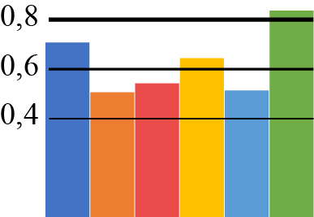

| 3,5-3,59 | |
| 3,6-3,69 | |
| 3,7-3,79 | |
| 3,8-3,89 | |
| 3,9-4,0 | |
| ≥ 4,0 |
* показники індекса людського розвитку АР Крим, Донецької та Луганської обл. подано за 2012 р.
|  | показник коливається в межах 0,0-1,0 ум. од. |
** дані за окремими складовими людського розвитку АР Крим, Донецької та Луганської обл. відсутні
| відтворення населення | |
| соціальне середовище | |
| комфортне життя | |
| добробут | |
| гідна праця | |
| освіта |
Примітка. Індекс людського розвитку - це інтегрований показник, який складається з 33 показників, що характеризують найнеобхідніші людські потреби